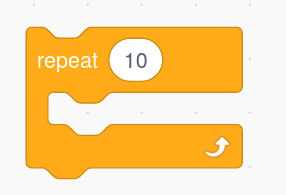
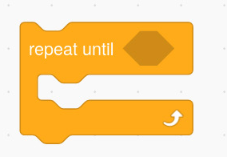
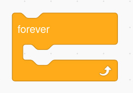

looping. Consider the following tasks in a game:
- (a)Moving a sprite to a location ten steps to the right.
- (b)Moving a sprite to the right until it reaches the edge.
- (c)Playing a sound while the game is playing.
All of these tasks require an action to be performed repeatedly before the final result can be obtained. To perform the first task, the sprite moves one step to the right (repeat this ten times) until it reaches the desired location. In the second task, the sprite moves to the right until it reaches the edge. In the third task, the action repeated is play a sound. The sprite plays the desired sound repeatedly until the game ends. So, as long as the game is playing, the sound will play.
Notice that in the first task, the action is repeated a fixed number of times (ten times). In the second task, the action is repeated until a given condition is met (reaching the edge). On the other hand, in the third task, the action of playing a sound is repeated continuously until the game stops.
This means there are three kinds of repetition control structures, namely repeat ( ) loop, repeat until ( ) loop and forever loop. For the repeat ( ) loop, the value in the brackets represents the number of times to repeat an action. For the repeat until loop, the value in the brackets represents the condition that makes the loop stop. The forever loop will run continuously until either you manually stop the program or use the stop block. In Scratch, these loops can be found in the Control block menu (observe Figure 6).



The repeat ( ) loop is used when you want to do an action a certain number of times. The repeat until ( ) loop is used when you want to do an action until a certain condition is met. The forever loop is used when you want to do an action without stopping. Activities 5 to 7 demonstrate how to use repetition control structures in a program.